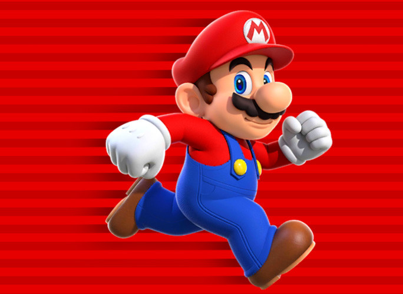

,
Bienvenidos a Hyperblog 2.0
Tu blog de ß
cabecera
ROMA LA SUPER
LA SUPER GATA
Esto explica por que Roma es
la super gata
Los gatos suelen ser aniamales muy solitarios
pero Roma es una gata especial.
Es cariñosa y le gusta molestar en las noches
Te amo romita bella
a ti tambien peque